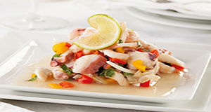

Ceviche
Contexto Histórico
O nome ceviche parece ter a sua origem no árabe sibesh e seriam ascozinheiras mouras que teriam levado este costume a Portugal e Espanha, que por sua vez o trouxeram para suas colônias. Este prato é feito de peixe, fresco e cru, cortado em pequenas tiras. ... O peixe utilizado deve ser de carne branca e de água salgada.

Ingredientes:
1 tranche de salmão (cerca de 200 g)
1 tranche de linguado (cerca de 200 g)
1 ½ xícara (chá) de caldo de laranja-lima
1 xícara (chá) de caldo de limão
1 xícara (chá) de tomate-cereja
1 cebola roxa picada
½ pimentão vermelho
4 colheres (sopa) de azeite
orégano a gosto
sal e pimenta-do-reino moída na hora a gosto
MODO DE PREPARO:
Numa tábua, corte os peixes, no sentido do comprimento, em tiras de 1 cm de espessura. Coloque-as numa tigela e regue com metade do suco de laranja-lima e com o suco de limão. Cubra com filme e leve à geladeira por 1 hora e 30 minutos.
Corte os tomates-cereja ao meio. Pique fino a cebola. Pré-aqueça o forno a 220ºC (temperatura alta).
Prepare o pimentão: besunte com óleo e leve ao forno preaquecido. Deixe assar por 20 minutos. Retire do forno e transfira para um saco plástico até esfriar. Retire a pele do pimentão esfregando com um pano de prato limpo. Corte ao meio, descarte as sementes e corte-o em tiras finas.
Após 1 hora e 30 minutos, retire o peixe da geladeira e acrescente a cebola, os tomates-cereja e o pimentão. Leve à geladeira por mais 30 minutos.
Em seguida, retire e escorra todo o líquido que se formou. Tempere com azeite, sal, pimenta-do-reino, orégano, coentro e o restante do suco de laranja-lima. Misture delicadamente para não quebrar as tiras de peixe e sirva imediatamente.
Dicas: Não encontrou salmão ou linguado? Pode usar outro peixe branco como saint peter (tilápia), robalo ou prego